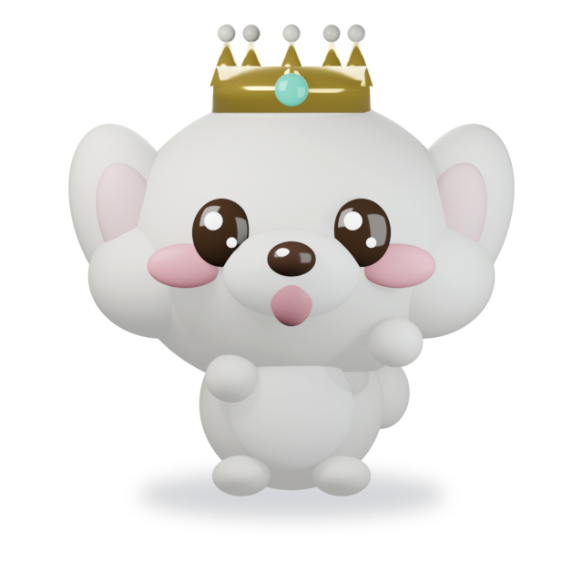

お好みのスタイルで口腔ケア相談、
ファタペット & ファタトーク
江南駅11番・12番出口徒歩1分 ・ 1994年開院 創業33年 ホワイトスタイル歯科医院公式コミュニティ
複雑なカスタマイズなしで、ワンクリックで クリーンミニマル、8bitたまごっち風ドット、韓国ゲームキャラクター の3つのスタイルを切り替えながら、矯正・最小削除ラミネート・インプラントのご質問を日本語でお気軽にご相談いただけます。
院内診療のカルテ番号または自由診療認証コードをご登録いただくと認証済みファタペットへ昇格し、ファタトーク（/messenger）のプライベートチャットや大容量ファイル送信がすぐにご利用いただけます。
ご案内: 上のボタンで クリーン、8bitドット、韓国キャラクター を今すぐ切り替えられます
選べる3つのデザインスタイル & ご利用ガイド
病院らしい清潔感からレトロドット、可愛い韓国ゲーム風キャラクターまで自由に切替初めてご来院を検討される方にも安心感のある「クリーンミニマル」を標準採用し、お好みに応じていつでもワンクリックでデザインを変更できます。
クリーンミニマル
標準スタイル白とエメラルドミントを基調とした清潔感あふれるデザインです。20代〜50代のどの世代の方にも読みやすく、信頼感のある病院公式案内UIをお届けします。
8bitドット（たまごっち風）
レトロスタイル日本の患者様にも大人気のレトロドットグラフィックでハヤニが登場します。画面隅でぴょこぴょこ動く親しみやすいピクセルスタイルです。

韓国ゲームキャラクター
ポップキャラクタートレンドの韓国モバイルゲーム風2頭身ちびキャラとパステルブルーのポップなUIです。院内正会員認証で王冠スタイルも楽しめます。
ブラウザでも拡張機能でも、いつでもそばにハヤニが待機
Webブラウザならインストール不要 ・ Google Chrome ウェブストア公式認証拡張機能 1クリック追加ご自身のファタペットとファタトーク新着通知を、毎日のWebブラウジング中でもワンクリックで確認できます。
Google Chrome ウェブストア公式拡張 (Chrome, Edge, Whale 対応)
- 下の「Chrome ウェブストアから1クリック追加」ボタンをクリックします。
- 右上の Chrome に追加 を押すと数秒で安全にインストールが完了します。
whitestyle.comにログインすると、どのWebサイトでも右下にファタペットが表示されます。
Webで今すぐ利用 (インストール不要)
- スマートフォンやパソコンのブラウザからそのままアクセスできます。
- 院内カルテ番号または認証コードの入力でプライベートルーム作成権限が即時解禁されます。
- 専用メッセンジャー「ファタトーク」で画像・動画・資料ファイルを安全に送受信できます。
創業33年 3名院長団協診 4大専門診療基準
江南駅11番・12番出口徒歩1分 ホワイトスタイル歯科医院1994年開院（創業33年）以来、ソウル大卒・檀国大外来教授・矯正学博士の金俊憲病院長をはじめとする3名院長団が、精密診断からアフターメインテナンスまで責任をもって診療いたします。
| 診療分野 | 担当院長団および協診体制 | 臨床原則および痛みを抑える麻酔システム |
|---|---|---|
| 歯科矯正（クリッピーC / 透明矯正） | 金俊憲 病院長（ソウル大卒・檀国大外来教授・矯正学博士）1対1専任 | 精密咬合診断から装置装着、治療後の保定管理まで担当医変更なしの1対1直接責任診療 |
| 最小削除審美補綴・ホワイトニング | 金俊憲 病院長、李鳳珍 代表院長、朴宣慧 院長（歯周科専門医）協診 | 天然歯の保存を最優先原則とし、精密咬合診断後に歯の削除量を最小限に抑えたオーダーメイドセラミックデザインと体系的な事後保証管理を提供いたします。 |
| 3D CT デジタルインプラント | 金俊憲 病院長、李鳳珍 代表院長、朴宣慧 院長（保健福祉部認証 歯周科専門医）3名協診 | 3D CT精密診断と3段階の痛みを抑える局所麻酔システムに基づき、埋入から最終補綴・定期検診まで安全に進めます（睡眠麻酔は一切行いません）。 |
| 日本語専任 グローバル診療 | 3名院長団協診および日本語専任通訳スタッフ3名常駐 | 日本語通訳スタッフ直通電話（+82-10-3046-5010）およびLINE直通相談（ID: whitestyle1）による来院前からアフターケアまで1対1専任サポート |
よくあるご質問
ファタペット・ファタトークおよび日本語診療についてwhitestyle.com ログイン後、正会員認証を行うと何が利用できますか？
whitestyle.com にメールまたはGoogleアカウントでログイン後、ご来院時のカルテ番号をご入力いただくとVIP正会員バッジとプライベート相談ルームの作成権限が即時解禁されます。さらに矯正・審美補綴・インプラント・ホワイトニング等の自由診療会員様は、院内認証コードによりファタトーク（/messenger）での大容量ファイル転送（最大500MBクラウドおよびP2P無制限）もご利用いただけます。
ファタトーク（/messenger）とはどのような機能ですか？
認証済みファタペット正会員様やご知人同士がプライバシーを守りながら会話・資料共有を行える専用メッセンジャーです。ページ上部の「ファタトークを開く」ボタン、または画面右下のフローティングドックからすぐにアクセスできます。
日本語通訳スタッフへ直接相談・予約するにはどうすればよいですか？
日本語専任通訳スタッフ3名が常駐しております。日本語通訳スタッフ直通電話（+82-10-3046-5010）またはLINE日本語直通相談（ID: whitestyle1）より、治療内容・滞在日程に合わせたご予約を日本語で承っております。
診療時間・休診日とアクセスを教えてください。
江南駅11番・12番出口より徒歩1分（大承ビル B1・1・2階）にございます。診療時間は月・火・水・金 10:00〜19:00（昼休憩 13:00〜14:00）、土曜日 10:00〜14:00（昼休憩なし・初診受付 13:30まで）であり、木曜日・日曜日・韓国の祝日は休診です。